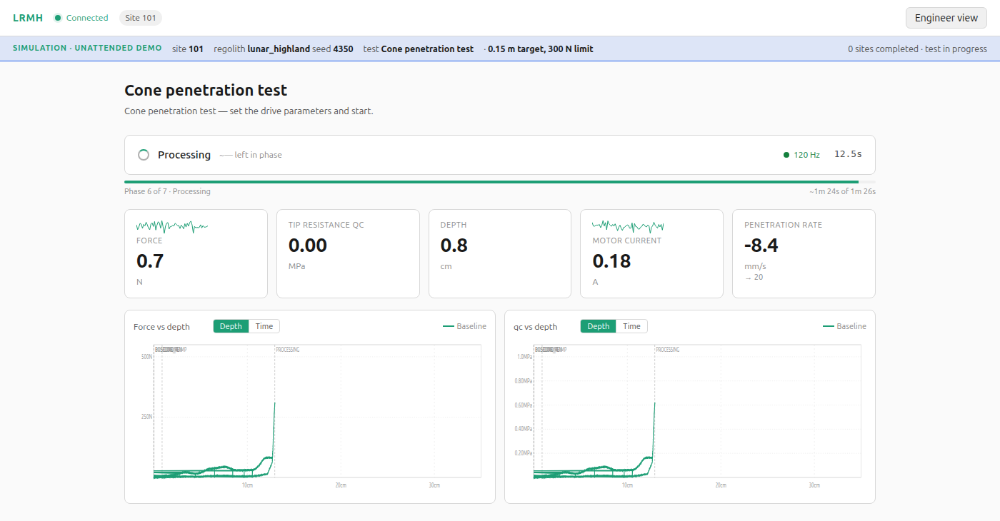

Before a crewed vehicle drives a corridor near the lunar south pole, and before a lander sets down beside it, somebody has to know whether the ground will hold. The last direct measurements at that scale were made by hand in the early 1970s, at three sites, with a spring-loaded penetrometer that stopped at 215 newtons. Everything since has been orbital inference and the occasional wheel trench.
The RMH capability page set out what an instrument for that job should do, and LRMH is the Aegis realization of it: a head that drives a cone or a plate into the regolith under controlled force or position and reduces what it feels into penetration resistance, load against sinkage, layer breaks, and how much the ground stiffens under repeated load. It was conceived as an instrument on a host vehicle. This note is about what changed: LRMH is now one half of a suite, and the suite is built to bolt onto a commercial rover that already exists.
01Two instruments, one flight image
| Instrument | What it measures | Hardware |
|---|---|---|
| LRMH | Bearing capacity at a stop: penetration resistance with depth, load–sinkage, layer breaks, compaction under repeat load | Linear actuator, load cell, encoder, cone and plate tools. Under 5 kg, under 30 W peak. |
| TREAD | Trafficability along the drive: wheel slip, tractive coefficient against slip, rut sinkage, per traverse segment | None. Two flight-software applications and a sensor interface. Reads encoder rate, motor current, commanded speed and visual odometry the rover already has. |
The two share a flight image, a host interface, and a product: a survey map that joins site records and segment records by the pose they were taken at. Bearing where the rover stopped, trafficability where it drove, co-registered. That is the number a traverse planner and a landing-site board both want, and neither measurement gives it alone.
TREAD also closes a loop the LRMH design left open. The capability page recommends a traction correlation, drawbar pull against slip, and the flight software carried that phase as a stub while the reaction-load reference stayed an open trade: the host’s wheel torque, or a dedicated tether sensor. The host’s wheels won. They are already instrumented, they are already on the ground, and they apply the load that matters.
02The flight software leads
The part of an instrument that usually arrives last exists first here. The LRMH flight software is eight applications on NASA’s core Flight System. It runs a nine-phase site test on its own, samples six channels at 100 Hz, reduces the samples onboard into a standardized site record, and persists it through the stock Data Storage app. Faults are watched by the stock Limit Checker and answered by Stored Command sequences, with three recovery tiers: resume the phase, skip the site, safe the instrument. Every sample and every record is stamped with the host’s pose and velocity at the moment of acquisition, which is to say the image was designed from its first architecture decision to ride on another vehicle.

What is new on this side is modest and useful. The dashboard has a viewer role, so a reviewer can watch a test in progress without the ability to send a command, and a director runs the simulation through site after site, drawing a different regolith each time and injecting a recoverable fault every few sites so the recovery tiers show. The mechanism interface below the apps is nine C functions behind a documented wire envelope, with a bench scaffold waiting for real sensors.
03What a host provides
The suite is built so that the ask of a rover provider is small enough to answer in an afternoon. A bolt pattern on the payload deck with 350 mm of reach to the surface beside the wheel track. A switched 28 V feed, under 30 W peak. One payload data link, Ethernet preferred, serial acceptable. And three telemetry packets the rover already has the data for: pose and body velocity with a quality flag, per-wheel encoder rate and motor current and commanded speed, and optionally a camera frame on request.
FIRM brings its own compute. The flight image runs on a payload single-board computer, not the host’s flight computer, and a single host-interface application owns the link. Nothing new is sensed, no control authority is requested, and the host does what it does anyway: drive, stop, drive. The head works at the stops. TREAD listens in between.
One number became a host property in the process. A penetrometer can only push as hard as its vehicle can react, and a rover-class host on the Moon weighs a few hundred newtons. So the force envelope is set per host from the load the vehicle can take at the mount without unloading a wheel, and crew-vehicle scale is reached the honest way: a loading plate sized to produce the target contact stress, and a Bekker fit to carry it to a bigger wheel.
04Where it fits
NASA selected three PRISM investigations for the Moon Base Program at the end of September 2026. One of them, DISCO, images ice in micro-cold traps and observes how rocket exhaust disturbs the surface and how stable it is for mobility near the base site. That is an optical payload observing the ground. FIRM contacts it. It measures the mechanical response under controlled load and under a vehicle’s own wheels, along corridors leading away from the lander, at the loads a crewed vehicle will apply. The two together give what neither gives alone: the imaged state of the surface near base, and the measured strength of the routes out of it.
The delivery is a CLPS rover. Several commercial providers are flying rovers of the right class in 2027, and the suite is written to any of them: the host is a configuration, not a port. The funding path is a PRISM proposal, or a hosted-payload or data-purchase arrangement with a provider directly. Both are conversations in progress, and this page will say so when either becomes more than that.
05Status, plainly
The flight software is complete and verified in simulation against a regolith model fitted to the Apollo 16 penetrometer records. The host interface is specified. The trafficability estimators are designed and their inputs are defined; the applications are next. The mechanism is a bounded build for a partner with planetary actuator heritage, and the first thing after this note is a bench analog in simulant, because the one critique that software cannot answer is the absence of a force-depth curve from real sand.
LRMH was an instrument looking for a vehicle. FIRM is a survey looking for a ride, and it asks very little of the vehicle that gives it one.
Sources: the RMH capability page and the LRMH page on this site; the public LRMH flight software at github.com/Aegis-Station-Infrastructure/lrmh-cfs; NASA, new science investigations for Moon Base, 30 September 2026 (DISCO). Apollo self-recording penetrometer limits from the Apollo 15 and 16 Preliminary Science Reports. Status as of October 2026.